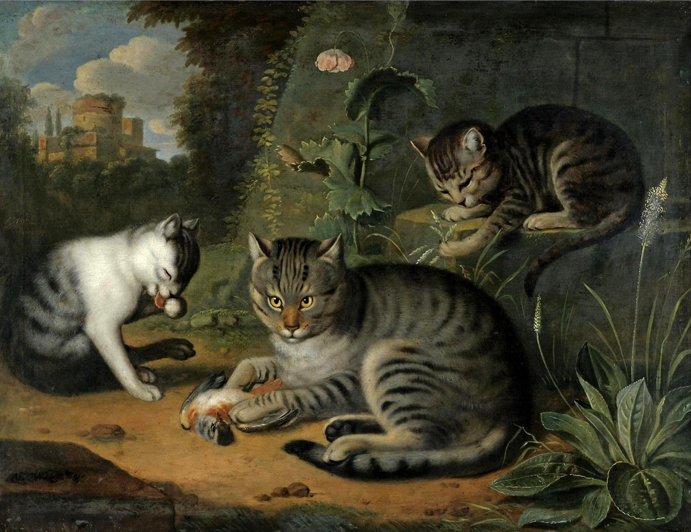

v
#general
1,093
Jeshua Stout
6:38 PM
@pierrhack I did for 6 days in Iceland
Jeshua Stout
6:38 PM
Which country to visit next? This is a photo with my friends - celebrating in Bali
my-top-places.jp
my-top-places.jp
Jeshua Stout
6:38 PM
@har_adams wow it’s amazing, I want to buy a van and travelling next year
Jeshua Stout
6:38 PM
Working from a van in Australia isn’t feasible if you need internet. It may have improved over the last years but I spent some time in a camper van around Tasmania and internet was a real problem (and Tasmania is tiny compared to the rest of the country).
Jeshua Stout
6:38 PM
@aa_da What's the reason for the van? Saving money or just like to get outside? If you've got a stable source of income you could always do some short term Airbnbs + buy a truck/topper, build a platform in the back. That way you can always convert it back to a truck and sleep in an apartment if you want.
Jeshua Stout
6:38 PM
@aa_da What's the reason for the van? Saving money or just like to get outside? If you've got a stable source of income you could always do some short term Airbnbs + buy a truck/topper, build a platform in the back. That way you can always convert it back to a truck and sleep in an apartment if you want.

.png)
Amilia Luna
UI Designer
Username@amilia_lu
Emaila-luna@gmail.com
Skypeamiluna
Timezone2:21 PM Local time